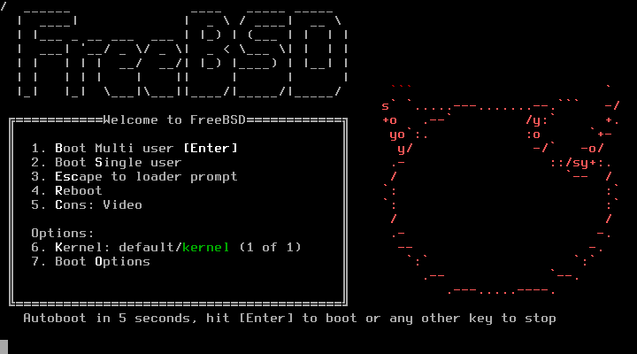

Sistemas operativos: Windows, Linux, Freebsd y Solaris
Comparativa técnica, arquitectónica y de uso. Propósito: dotar al lector de criterios prácticos para elegir y administrar cada familia.
Resumen ejecutivo
Windows, Linux y Solaris representan tres enfoques distintos de ingeniería de sistemas. Windows prioriza compatibilidad de aplicaciones y experiencia de usuario, Linux ofrece modularidad, control y diversidad de distribuciones; Solaris históricamente se ha centrado en escalabilidad, tolerancia a fallos y características empresariales de alto rendimiento. La elección depende de requisitos: software disponible, seguridad operativa, soporte hardware y filosofía de administración.

FreeBSD: Una aventura al sistema operativo que a todos se nos olvida de la conversación
FreeBSD es un sistema operativo de carácter Unix-like que mismo es de software libre, descendiente directo de la Berkeley Software Distribution (BSD). Su primera versión fue publicada el 1 de noviembre de 1993, desarrollada a partir de 386BSD, y rápidamente se consolidó como uno de los primeros clones de Unix completamente funcionales y libres capaces de ejecutarse en hardware doméstico accesible. Desde entonces, FreeBSD ha sido el sistema BSD derivado más utilizado y con mayor continuidad histórica.
El desarrollo de FreeBSD está a cargo del FreeBSD Project, una comunidad global de desarrolladores y mantenedores. El sistema está escrito principalmente en C (estándar C11) y se distribuye bajo la Licencia FreeBSD, una licencia permisiva que permite el uso, modificación y redistribución del código con mínimas restricciones, en contraste con el enfoque copyleft de la GPL utilizada por Linux.
A diferencia de Linux —que distribuye únicamente el kernel y depende de proyectos externos como GNU para el espacio de usuario— FreeBSD se concibe como un sistema operativo completo e integrado. Incluye el kernel, los controladores de dispositivos, las utilidades del userland, el sistema de documentación y las herramientas administrativas, todo desarrollado y mantenido de forma coherente dentro del mismo proyecto. Este enfoque prioriza la estabilidad, la consistencia y el control de calidad.
El kernel de FreeBSD es monolítico con soporte para módulos cargables dinámicamente, lo que combina rendimiento con flexibilidad. El sistema utiliza shells Unix tradicionales como sh o tcsh, seleccionables por el usuario. Su administrador de paquetes es pkg, complementado por el robusto sistema de FreeBSD Ports, que permite compilar aplicaciones desde el código fuente con opciones personalizadas.
FreeBSD está orientado principalmente a servidores, estaciones de trabajo, sistemas embebidos y firewalls de red, aunque también puede emplearse como sistema de escritorio para usuarios técnicos. Las plataformas compatibles de nivel 1 incluyen amd64 (x86-64) y ARM de 64 bits, con soporte adicional para arquitecturas como RISC-V, ARMv7 y PowerPC. Históricamente, también ha soportado arquitecturas hoy discontinuadas como MIPS, IA-64 y SPARC.
El proyecto mantiene un equipo de seguridad dedicado, responsable de auditar y responder a vulnerabilidades en todo el software incluido en la distribución base. Además, FreeBSD cuenta con el respaldo institucional de la FreeBSD Foundation, que apoya el desarrollo, la infraestructura y la promoción del sistema.
Una de las mayores pruebas de la solidez técnica de FreeBSD es su adopción en otros sistemas de alto impacto. Partes significativas de su código forman la base de Darwin, el núcleo de macOS, iOS, iPadOS, watchOS y tvOS. También es el fundamento de sistemas como TrueNAS, y del software de sistema de consolas como PlayStation 3, PlayStation 4, PlayStation 5 y PlayStation Vita. Asimismo, los otros sistemas BSD modernos —OpenBSD, NetBSD y DragonFly BSD— comparten e intercambian código con FreeBSD de manera continua.
Windows
Visión general
Windows es una familia de sistemas operativos orientada al usuario final y a la compatibilidad binaria con aplicaciones comerciales. Está basada en el kernel NT, diseñado con una arquitectura de microkernel híbrido que prioriza compatibilidad y servicios nativos (GUI, gestión de dispositivos, subsistemas de compatibilidad).
Arquitectura y componentes clave
Kernel: Windows NT — subsistemas (kernel, executive, drivers, HAL).
Gestión de memoria: paginación con grandes áreas reservadas y memoria virtual.
Sistema gráfico: Win32 + subsistemas modernos (DWM, DirectX en espacio de usuario).
Seguridad: UAC, Defender, Windows Update y modelo de cuentas (SAM/Active Directory).
Administración y herramientas
Herramientas nativas: PowerShell, Event Viewer, Group Policy, Windows Management Instrumentation (WMI).
// Comandos de diagnóstico básicos
systeminfo
wmic cpu get name
Get-EventLog -LogName System -Newest 20
Fortalezas y debilidades
Fortalezas
Debilidades
Compatibilidad masiva de software
Mayor superficie de ataque por popularidad
Interfaz uniforme para usuarios no técnicos
Menos control a bajo nivel para administradores
Linux
Visión general
Linux es un kernel acompañado por miles de distribuciones que combinan distintos userlands, gestores de paquetes y políticas de actualización. Su fortaleza es la modularidad: puedes elegir desde una distribución minimalista para un sistema embebido hasta una suite completa para centros de datos.
Arquitectura y componentes clave
Kernel monolítico modular: drivers como módulos cargables (loadable modules).
Espacio de usuario: GNU utilities, systemd / init alternatives, shells (bash, zsh).
Gestión de paquetería: apt, yum/dnf, pacman, zypper, etc.
Administración y herramientas
Comandos imprescindibles:
# Información del kernel y sistema
uname -a
lsb_release -a
# Control de servicios (systemd)
sudo systemctl status sshd
sudo journalctl -u sshd --since "2 hours ago"
Diversidad y casos de uso
Las distribuciones (Debian/Ubuntu, Fedora/RHEL, Arch, Alpine, etc.) responden a distintos trade-offs: estabilidad, modernidad, tamaño, filosofía. Linux domina servidores, cloud, contenedores y sistemas embebidos por su ligereza y control.
Seguridad y mantenimiento
Prácticas recomendadas
Actualizaciones regulares y revisión de CVEs.
Principio de mínimos privilegios y uso de namespaces/containers para aislamiento.
Solaris, legado de Sun Microsystems y actualmente mantenido en variantes comerciales y comunitarias, se diseñó para entornos empresariales que requieren escalabilidad, estabilidad y características avanzadas de administración de sistemas.
Características técnicas destacadas
ZFS: sistema de archivos y gestor de volúmenes con integridad de datos y snapshots.
SMF (Service Management Facility): sistema de gestión de servicios con dependencias y recuperación automática.
Recursos de virtualización: containers (zones) y soluciones de virtualización de alto rendimiento.
Administración y comandos
# Información básica
uname -a
# Paquetes (IPS)
pkg info | head
# Gestión de servicios (SMF)
svcs -a | grep network
svcadm restart svc:/network/physical
Fortalezas y escenarios
Solaris destaca en cargas que requieren coherencia de datos en gran escala (almacenamiento) y en entornos donde ZFS y la administración integrada aportan valor. Su adopción en la nube pública y privada es menor comparada con Linux, pero sigue siendo relevante en nichos empresariales.
Comparativa técnica
Ámbito
Windows
Linux
Solaris
Modelo de kernel
NT (híbrido)
Monolítico modular
Monolítico con extensiones empresariales
Sistema de archivos
NTFS, ReFS (moderno)
ext4, xfs, btrfs, ZFS (a través de módulos)
ZFS nativo
Gestión de paquetes
Instaladores/Store
apt/dnf/pacman/... (varía por distro)
IPS pkg
Ámbito predominante
Escritorio, aplicaciones comerciales
Servidores, cloud, embebido
Enterprise, almacenamiento
Casos de uso y recomendaciones
Escritorio de usuario general: Windows (compatibilidad), Linux (privacidad y personalización).
Servidores web/infraestructura cloud: Linux por flexibilidad y ecosistema de contenedores.
Almacenamiento empresarial y bases de datos críticas: Solaris (ZFS) o Linux con ZFS según soporte.
Entornos híbridos y compatibilidad: usar herramientas de virtualización y contenedores para aislar y portar cargas entre plataformas.
Recomendación rápida para administradores
Definir requisitos no funcionales: RTO/RPO, latencia, throughput.
Evaluar ecosistema de soporte (proveedor, comunidad, parches).
Probar cargas en staging con métricas reproducibles.
Glosario
Kernel
Parte central del sistema operativo que gestiona recursos y comunicación HW–SW.
ZFS
Sistema de archivos avanzado con verificación de integridad y snapshots.
SMF
Service Management Facility: gestor de servicios de Solaris con políticas de recuperación.
Conclusión
En ingeniería, elegir un sistema operativo es elegir un contrato con el futuro: Windows ofrece compatibilidad y experiencia de usuario; Linux, libertad, adaptabilidad y dominio en infraestructuras modernas; Solaris, solidez en almacenamiento y entornos críticos. Aprende los supuestos de diseño de cada plataforma y deja que los requisitos (no la moda) guíen tu decisión.
¡Hola! 🍪 Usamos cookies para mejorar tu experiencia en la wiki.
Más información